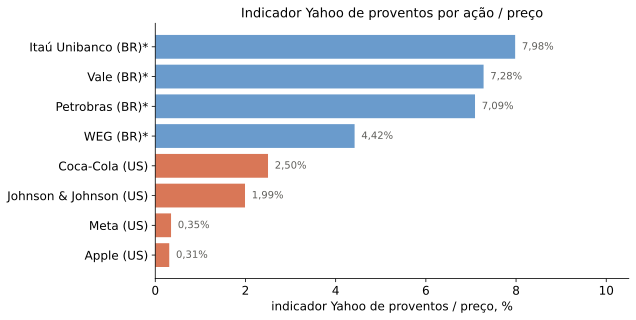
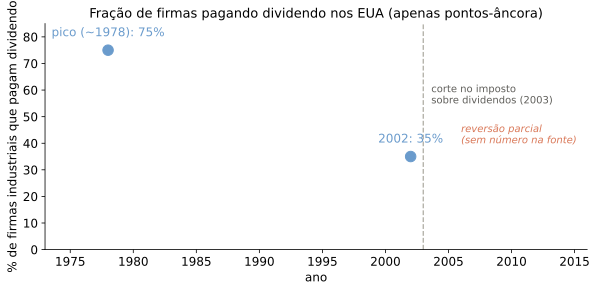
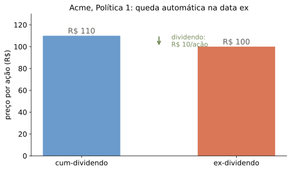

Políticas de Remuneração ao Acionista: Dividendos e Recompras
Onde estamos
- Última aula: Aula 15, risco moral e desenho de contratos de remuneração a gestores
- Hoje: como a firma remunera acionistas — e isso muda o valor da firma?
- Roteiro: instituições → evidência → Modigliani-Miller → impostos → sinalização
A pergunta
Dividendos, recompras, JSCP: a forma de devolver caixa ao acionista muda o valor da firma?
Como a firma remunera o acionista
Firmas podem transferir recursos aos acionistas por três vias:
- Dividendos
- Recompra de ações
- Juros sobre Capital Próprio — JSCP (Brasil, pós-1995)
Perguntas centrais: quanto é pago? quando, com que frequência? como? qual é a política ótima?
Dividendos: datas e mecânica
- Pagamento de proventos ao acionista, em dinheiro
- Quatro datas relevantes: anúncio, data com (cum-dividendo), data ex, pagamento efetivo
- Na data ex, o preço da ação sofre uma queda automática — veremos o tamanho exato adiante
- Diferenças tributárias entre firma e acionista importam para a escolha entre instrumentos
Dividendos no Brasil: JSCP e obrigatoriedade
- JSCP: já visto na Aula 11 como forma de reduzir a vantagem fiscal da dívida no WACC; aqui, é uma forma de remuneração ao acionista, dedutível para a firma
- Teto legal dado pela Taxa de Juros de Longo Prazo (TJLP) — descrição fiel à fonte de 2022; a Lei 14.789/2023 alterou materialmente o regime de JSCP a partir de 2024, então esta regra não deve ser tomada como o regime vigente sem checagem
- Dividendo obrigatório, na Lei das S.A.: 25% do lucro líquido é o padrão comum, mas o estatuto da companhia pode fixar outro nível
Recompra de ações
- A firma compra de volta ações previamente emitidas — pode mantê-las em tesouraria ou cancelá-las
- Cada ação que permanece no mercado passa a valer uma fração maior da companhia, mas o valor total dos ativos cai pela despesa da compra
- Métodos usuais:
- Compra em mercado aberto
- Oferta pública de aquisição (tender offer), normalmente com prêmio sobre o mercado
- Leilão holandês
- “Greenmail”: recompra das ações de um candidato a comprador hostil, para bloquear o takeover
Payout hoje: quem paga o quê

Snapshot yfinance de 2026-07-27: trailingAnnualDividendRate / preço. É um indicador do Yahoo, não caixa efetivamente pago em 12 meses: Ticker.dividends usa data ex e mistura dividendos com JSCP nos tickers brasileiros. WEG, por exemplo, inclui dividendo extraordinário com parcelas pagáveis até 2028. Classificação e datas foram conferidas nos RIs; detalhes em dados/16-dividendos/SNAPSHOT_INFO.txt.
Tendências nos EUA
- Historicamente, vantagem fiscal para recompras frente a dividendos nos EUA
- Volume total pago em recompras cresceu de forma expressiva ao longo das últimas décadas
Evidência acadêmica: composição do payout
Grullon e Michaely (JF, 2002), com firmas americanas (Compustat, 1972–2000):
- O payout total (dividendo + recompra) como fração dos lucros (payout ratio) muda pouco no período
- Mas a composição se desloca: a fatia paga como dividendo cai, a fatia paga como recompra sobe
- Consistente com substituição: recompra passa a fazer o papel que antes era do dividendo
Evidência acadêmica: quem paga dividendo?
Fama e French (JFE, 2001), com firmas do CRSP (NYSE/AMEX/Nasdaq):
- A fração de firmas pagando dividendo caiu de forma acentuada entre o fim dos anos 1970 e 1999
- Duas explicações, não excludentes:
- Efeito de composição: entrada de firmas de crescimento acelerado, que não pagam dividendo
- Firmas passaram a pagar dividendo com probabilidade menor, mesmo controlando por características (“disappearing dividends”)
Tendência agregada mais recente

Berk e DeMarzo, Fig. 17.4 (“Trends in the Use of Dividends and Repurchases”, edição mais antiga usada nas notas originais — não confundir com a Fig. 17.4 de impostos internacionais, duas telas adiante, que tem o mesmo número numa edição diferente): apenas os dois pontos-âncora citados na legenda original são marcados — nenhuma linha os conecta, pois a trajetória exata não consta do texto da legenda. O “75%” da legenda corresponde ao pico da série, por volta de 1978 (a curva sobe a partir de 1975, antes de declinar até 35% em 2002) — não ao nível de 1975. A legenda original também informa que a fração de firmas que recompram ações a cada ano ficou em torno de 30%, em média, no período. Adicionalmente (Fig. 17.5): desde o fim dos anos 1990, a recompra já é a maior parcela do payout total — logo, supera 50%.
Mudanças fiscais nos EUA
Alíquotas de imposto de renda, ganho de capital vs. dividendos (Berk e DeMarzo, Tabela 17.2):
| 1971–1978 |
35% |
70% |
| 1979–1981 |
28% |
70% |
| 1982–1986 |
20% |
50% |
| 1987 |
28% |
39% |
| 1988–1990 |
28% |
28% |
| 1991–1992 |
28% |
31% |
| 1993–1996 |
28% |
40% |
| 1997–2000 |
20% |
40% |
| 2001–2002 |
20% |
39% |
| 2003–2012 |
15% |
15% |
| 2013– |
20% |
20% |
Alíquotas marginais mais altas, para ativos mantidos por mais de um ano. Ver tratamento atual de “qualified dividend”.
Impostos pelo mundo
Berk e DeMarzo, Fig. 17.4 (“Dividend and Capital Gains Tax Rates Around the World”, dados OECD 2007 — mesma numeração da Fig. 17.4 de tendências, telas atrás, mas de uma edição diferente) — fatos qualitativos da legenda original:
- Na maioria dos países, a alíquota sobre dividendos é maior ou igual à de ganho de capital — favorecendo recompras
- Algumas exceções: no Chile, o ganho de capital é tributado mais que o dividendo
- Vários países — Singapura, México, Índia, Hong Kong — não tributam nenhum dos dois
Transição: e a teoria?
Antes de perguntar por que cada firma escolhe sua política, vale perguntar se a escolha importa para o valor.
Recall: Modigliani-Miller (Aula 11)
- Vimos: em mercado de capitais perfeito, a estrutura de capital (D/E) não afeta o valor da firma
- Hoje: sob hipóteses análogas — sobretudo, política de investimento fixa — a política de pagamento também não afeta
Modigliani-Miller e pagamentos
- Sob as hipóteses usuais (principalmente, mantendo fixa a política de investimentos), o valor da firma independe da política de pagamentos aos acionistas
Argumento: imagine duas firmas com ativos idênticos.
- Com mercados de capital perfeitos, um investidor que deseje fluxo de caixa pode imitar dividendos vendendo parte de suas ações em uma companhia que não pague dividendos
- Um investidor que não deseje esse fluxo pode reinvestir dividendos recebidos, comprando ações de uma firma que os pague
Exemplo: Acme S.A.
- Gera R$12 milhões por ano; requer reinvestimento de R$2 milhões por ano, perpetuamente
- Fluxo de caixa livre: R$10 milhões por ano — livres já hoje
- Retorno requerido ao acionista: 10% a.a. (sem dívida; alavancagem não muda)
- 1.000.000 ações emitidas
Política 1: pagar todo o fluxo de caixa livre como dividendo.
- Dividendo por ação: R$10
- Valor de mercado: (cum-dividendo) R$110 milhões — (ex-dividendo) R$100 milhões
O preço cai exatamente o dividendo

Três políticas para a mesma firma
Política 2: pagar R$12 de dividendo por ação, levantando R$2 milhões em nova emissão de ações.
Política 3: recomprar R$10 milhões em ações (em vez de pagar dividendo).
M-M garante equivalência entre as três.
Verificando a equivalência
| Caixa recebido hoje/ação |
R$10 |
R$12 |
R$0 |
| Preço por ação remanescente |
R$100,00 |
R$98,00 |
R$110,00 |
| Riqueza total do acionista original |
R$110,00 mi |
R$110,00 mi |
R$110,00 mi |
Na Política 2, 20.408 novas ações são emitidas a R$98,00 (preço ex-dividendo, autoconsistente). Na Política 3, 90.909 ações são recompradas ao preço cum-dividendo de R$110 — por isso o preço remanescente não cai.
Replicação: “homemade dividends”
Um acionista passivo sob a Política 3 (recompra) pode replicar a Política 1 sozinho:
- Vende 9,09% de suas ações ao preço de R$110 — embolsa R$10 por ação original, igual ao dividendo da Política 1
- Mantém o resto, valendo R$100 por ação original — igual ao valor ex-dividendo da Política 1
Mesma lógica no sentido inverso: quem recebeu dividendo e não quer o caixa pode reinvesti-lo, recomprando ações.
Resumo: dividendos vs. recompras
Berk e DeMarzo, Tabela 17.3:
| Como o caixa é distribuído |
Pagamento por ação, a todos os acionistas |
Ações compradas de alguns acionistas |
| Participação |
Involuntária (quem tem ação, recebe) |
Voluntária (acionista escolhe vender ou não) |
| Tributação (investidor comum) |
Geralmente como renda ordinária, mas a 20% desde 2013 |
Como ganho de capital, a 20% desde 2013 |
| Efeito sobre o preço |
Cai exatamente o valor do dividendo |
Inalterado, se recomprado a preço justo |
Usando o resultado
- Ajuda a evitar argumentos falaciosos sobre política de pagamento
- Direciona a pergunta: como a política de pagamento poderia afetar o valor total da firma?
- Tributação diferencial entre políticas
- Informação assimétrica e sinalização
- Interação com problemas de agência na firma
A tese do pássaro na mão
Argumento comum:
- Dividendo pago hoje é mais seguro que promessa de pagamento futuro
- Investidores pagariam um prêmio por firmas que pagam mais dividendo
- Logo, dividendos aumentariam o valor da firma
Problemas:
- Política de dividendos não muda o “tamanho do bolo” — não pode mudar o valor da firma
- Mesmo que existam nichos (“clientelas”), isso não implica prêmio, nem que a firma na margem se beneficie
- Mesmo com problemas de agência (fluxo de caixa livre de Jensen), o ganho vem da mudança na política de investimento, não do pagamento em si
- Se gestores conseguissem levantar fundos com emissão para financiar projetos de \(VPL<0\), nada se altera
Pagamento ou retenção
- Uma vez financiados todos os investimentos com VPL positivo, qualquer projeto adicional destrói valor
- Alternativas a investimentos ineficientes: pagamento aos acionistas, ou compra de ativos financeiros
- Em mercado perfeito, qualquer uma dessas operações tem \(VPL=0\) — e pode ser desfeita pelo próprio acionista
- Com vantagens fiscais, isso deixa de valer: por exemplo, saldo em títulos funciona como dívida negativa
Impostos e taxa efetiva
- Na presença de impostos, o investidor só recebe \(D(1-\tau_{D})\) do dividendo pago
- E só se apropria de \((P_{t+1}-P_{t})(1-\tau_{g})\) de qualquer ganho de capital
- Por não arbitragem (desprezando desconto e incerteza no intervalo curto):
\[\left(P_{cum}-P_{ex}\right)\left(1-\tau_{g}\right)=D\left(1-\tau_{D}\right)\]
De onde vem a condição de não-arbitragem
Comparando quatro estratégias em torno da data ex — a álgebra completa fica para o quadro:
- Vende antes do dividendo: recebe \(P_{cum}(1-\tau_g)+\tau_g P_{compra}\)
- Vende depois: recebe \(P_{ex}(1-\tau_g)+\tau_g P_{compra}+D(1-\tau_D)\)
- Compra hoje e vende amanhã (ida e volta, captura o dividendo): ganho \(=P_{ex}+D(1-\tau_D)-P_{cum}-\tau_g(P_{ex}-P_{cum})\)
- Vende hoje e recompra amanhã, para revender no futuro (evita o dividendo): ganho \(=P_{cum}-P_{ex}-D(1-\tau_D)-\tau_g(P_{cum}-P_{ex})\)
Para nenhuma estratégia gerar ganho de arbitragem, todas devem coincidir — o que dá exatamente a condição da tela anterior.
Taxa efetiva de tributação dos dividendos
Manipulando a condição de não arbitragem:
\[P_{cum}-P_{ex}=D\frac{\left(1-\tau_{D}\right)}{\left(1-\tau_{g}\right)}=D\left(1-\underset{=:\ \tau_{D}^{*}}{\underbrace{\frac{\tau_{D}-\tau_{g}}{1-\tau_{g}}}}\right)\]
\(\tau_D^*\) é o tributo equivalente: mede o quanto o dividendo é desfavorecido frente ao ganho de capital.
Sinalização: suavização de dividendos
- Regularidade empírica, para firmas que pagam dividendo: dividendos são menos voláteis que a receita
- Lintner (1956): acionistas desejam dividendo suavizado; firmas perseguem uma razão-alvo dividendo/receita
- Isso é compatível com M-M? Pergunta em aberto no material-fonte — M-M não faz previsão sobre suavização, mas motiva perguntar por que ela ocorreria se a política fosse irrelevante.
Na prática: Oi (2013)
Em agosto de 2013, a Oi reduziu sua política de dividendos projetada de R$2 bilhões/ano para R$500 milhões/ano (2013–2016) — o novo mínimo seria o maior valor entre 25% do lucro líquido, 3% do patrimônio líquido ou 6% do capital social.
“Oi reduz pagamento de dividendos em 75%” — O Globo, 14/08/2013 (Bruno Rosa).
Às 11h30 do dia da notícia, as ações ordinárias caíam 8,32% e as preferenciais recuavam 6,73% — consistente com a leitura de que corte de dividendo é má notícia (cotação intradiária; não é o fechamento do pregão).
O ambiente do modelo
- Três datas: \(t=0,1,2\)
- Em \(t=1\), produz-se \(r\) (determinístico)
- Em \(t=2\), produz-se \(R\) em caso de sucesso, \(0\) caso contrário — responsabilidade limitada
- Probabilidade de sucesso depende de esforço inobservável mais reinvestimento
Linha do tempo do modelo
| Empreendedor tem caixa próprio \(A\), capta \(I-A\). Contrato. |
\(r\) acumula (determinístico). Risco moral: esforço (\(p=p_H\) ou \(p_L\)). Empreendedor aprende, privadamente, seu tipo \(i\in\{G,B\}\). Dividendo \(d\) é pago; \(r-d\) é reinvestido. |
Lucro \(R\) com probabilidade \(p+\tau_i(r-d)\); \(0\) caso contrário. |
Recriado nativamente a partir de Tirole (2006), Fig. 6.2 — não é a imagem do livro.
Risco moral e tipo privado
- Esforço alto: \(p=p_H\). Esforço baixo: \(p=p_L\) e benefício privado \(B\)
- Recall Aula 14: \(\Delta p\equiv p_H-p_L\)
- Reinvestimento \(J\) em \(t=1\) aumenta a probabilidade de sucesso em \(\tau_i(J)\), \(i=G,B\)
- Indivisibilidade: \(J\in\{0,r\}\) — reinveste tudo ou nada
- O tipo (retorno do reinvestimento) é aprendido privadamente em \(t=1\) — informação é simétrica em \(t=0\)
- Com probabilidade \(\alpha\): tipo \(G\). Com \((1-\alpha)\): tipo \(B\)
Hipóteses do modelo
H1 (investimento produtivo): \(\tau_i'>0,\ \forall i\)
H2 (\(G\) é boa notícia, em média): \(\tau_G(J)>\tau_B(J),\ \forall J\in[0,r]\)
H3 (na margem, \(G\) é menos produtivo; reinvestir só é eficiente para \(B\)):
\[\left[\tau_{B}(r)-\tau_{B}(0)\right]R>r>\left[\tau_{G}(r)-\tau_{G}(0)\right]R\]
Contrato candidato: separação por dividendo
Candidato a solução: \(d=r\) (paga tudo) para tipo \(G\); \(d=0\) (reinveste tudo) para tipo \(B\); esforço alto para ambos.
- Ocorre para \(\alpha\) não muito grande, e ganhos de reinvestimento grandes para \(B\)
- Valor esperado do projeto:
\[\alpha\left[r+\left(p_{H}+\tau_{G}(0)\right)R\right]+(1-\alpha)\left[p_{H}+\tau_{B}(r)\right]R\]
Compatibilidade de incentivos: esforço
O retorno do empreendedor em caso de sucesso depende apenas de variáveis observáveis. IC para esforço:
- Após dividendo \(d=r\) (equilíbrio, tipo \(G\)): \(\quad R_{e}^{d=r}\geq\dfrac{B}{\Delta p}\)
Após dividendo \(d=0\) (equilíbrio, tipo \(B\)): \(\quad R_{e}^{d=0}\geq\dfrac{B}{\Delta p}\)
A restrição destacada (IC de esforço do tipo \(B\)) é uma das duas que binds — usada adiante na renda penhorável.
Compatibilidade de incentivos: tipo e reinvestimento
Para que o tipo \(G\) prefira pagar dividendo a reinvestir:
\[r_{e}^{d=r}+\left[p_{H}+\tau_{G}(0)\right]R_{e}^{d=r}\geq\left[p_{H}+\tau_{G}(r)\right]R_{e}^{d=0}\]
Para que o tipo \(B\) prefira reinvestir a se passar por \(G\):
\[\left[p_{H}+\tau_{B}(r)\right]R_{e}^{d=0}\geq r_{e}^{d=r}+\left[p_{H}+\tau_{B}(0)\right]R_{e}^{d=r}\]
A segunda restrição (tipo \(B\) mimetizar \(G\)) fica folgada na determinação da renda penhorável (bem como desvios duplos). A restrição destacada acima — tipo \(G\) não desviar para reinvestir — é a outra que binds.
Renda penhorável do modelo
Com separação, o pagamento ao investidor externo é
\[\alpha\left[(r-r_{e}^{d=r})+(p_{H}+\tau_{G}(0))(R-R_{e}^{d=r})\right]+(1-\alpha)\left[p_{H}+\tau_{B}(r)\right](R-R_{e}^{d=0})\]
As duas restrições destacadas (caixas dos slides anteriores) binding — não duas ICs de esforço:
- IC de esforço do tipo \(B\): \(R_{e}^{d=0}=\dfrac{B}{\Delta p}\)
- IC de não-desvio do tipo \(G\) (dividendo vs. reinvestir): \(r_{e}^{d=r}+\left[p_{H}+\tau_{G}(0)\right]R_{e}^{d=r}=\left[p_{H}+\tau_{G}(r)\right]R_{e}^{d=0}\)
Substituindo as duas na expressão acima:
\[{\cal P}=\alpha\left[r+\left[p_{H}+\tau_{G}(0)\right]R-\left[p_{H}+\tau_{G}(r)\right]\frac{B}{\Delta p}\right]+(1-\alpha)\left[p_{H}+\tau_{B}(r)\right]\left(R-\frac{B}{\Delta p}\right)\]
Valor da firma antes e depois do anúncio
Implementação: empreendedor detém uma fração das ações em \(t=1\) e outra em \(t=2\) (ver livro-texto).
Valor da firma (ação) em \(t=0\):
\[V_{0}=\alpha\left[r+\left(p_{H}+\tau_{G}(0)\right)R\right]+(1-\alpha)\left[p_{H}+\tau_{B}(r)\right]R\]
Após o anúncio de dividendos (\(d=r\), revela tipo \(G\)):
\[V_{1}^{d=r}=r+\left[p_{H}+\tau_{G}(0)\right]R\]
O resultado: dividendo é notícia boa
\[V_{1}^{d=r}-V_{0}=(1-\alpha)\left[r-\left[\tau_{B}(r)-\tau_{G}(0)\right]R\right]\]
Das hipóteses H2+H3, \(\ r>\left[\tau_{B}(r)-\tau_{G}(0)\right]R\), logo:
\[V_{1}^{d=r}>V_{0}\]
Dividendos são, em média, notícia positiva sobre o produto esperado da firma — o ganho da revelação supera o custo de abrir mão do reinvestimento na margem.
Quando a notícia pode ser ruim
- É possível construir exemplos em que o impacto de uma notícia sobre dividendos seja negativo
- Má notícia, nesse caso: a ausência de reinvestimentos com VPL positivo que justificassem a retenção
O sinal do efeito depende dos parâmetros do modelo — não é uma implicação universal.
O que aprendemos hoje
- Sob as hipóteses de M-M (política de investimento fixa), a política de pagamento é irrelevante para o valor da firma
- Impostos criam uma cunha efetiva \(\tau_D^*\) entre dividendo e ganho de capital
- Suavização de dividendos (Lintner) motiva a hipótese de sinalização: mudanças no dividendo carregam informação
- No modelo formal, pagar dividendo (em vez de reinvestir) pode revelar tipo em equilíbrio separador — em geral, notícia boa
Encerramento do curso
O curso percorreu, do início ao fim, a mesma lógica:
- Avaliação: títulos, ações, projetos — tudo é valor presente de fluxos de caixa
- Risco: CAPM, APT — o preço do risco vem de covariância com o que é caro nos estados ruins
- Financiamento: M-M mostra que, sem fricções, nada disso — dívida, dividendo — muda o valor
- Fricções: impostos, falência, informação assimétrica, risco moral — é aí que as respostas do “mundo real” se afastam do benchmark
A pergunta que fica
Não é a fórmula que muda a resposta — é a fricção que está por trás dela.